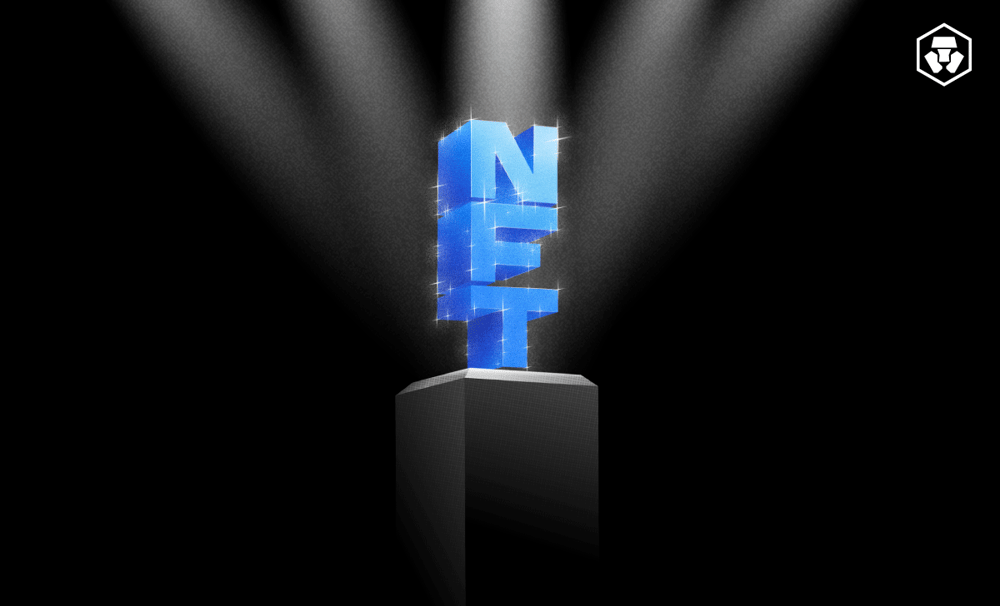
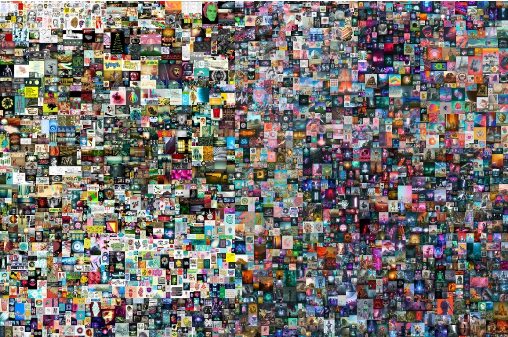
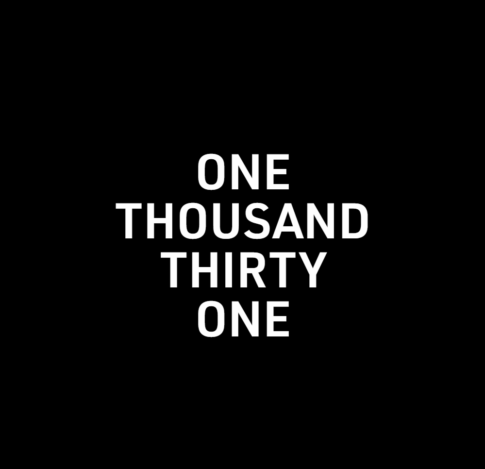

Non-fungible tokens (NFTs) have jumped onto the global financial main stage in the crypto sector. Well-known artists and promises of metaverses, amongst other factors, have played a role in the success of some NFTs and NFT collections.
While the NFT space has become quite saturated, a select few have taken the lions share and become worth millions of dollars.Here, we cover three of the most expensive NFTs to date, according to their sale price, and their impact on the digital collection space.
Digital artist Paks creation Merge fetched US$91.8 million on NFT platform Nifty Gateway in December 2021. The NFT set a new record for the most expensive artwork sold by a living artist.
However, the claim to the most expensive NFT is debatable, depending on whether Merge is considered to be a single piece.
Created by Mike ‘Beeple’ Winkelmann, The First 5000 Days is a collage of over 5,000 pieces put together once per day since May 2007. It debuted at the Christie’s Auction digital art house in March 2021, becoming the fourth-most-expensive piece ever sold at the Christie’s auction by a living artist.It was sold to Vignesh Sundaresan, a Singapore-based crypto investor who is actively involved in the NFT space with his own Metapurse NFT project.
Clock was reportedly created to raise funds for WikiLeaks founder Julian Assange’s legal defence against potential extradition to the US. The piece was a clock, showing how long Assange had been imprisoned. The AssangeDAO, a group of over 10,000 members on a self-proclaimed mission to ‘Free Julian Assange’, ultimately purchased the NFT for US$52.7 million. Arguably, this NFT is more than a digital piece of art; it demonstrates the potential social impact of an NFT.
